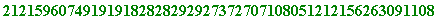
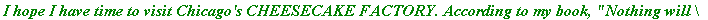

Converting text to number and number to text
Doing cryptography, we will
- convert text into numerical form according to an agreed convention
- disguise (encrypt) the resulting number
- the recipient will recover (decrypt) the original number
- convert that number into the original text
A convention re ordering alphabetic and other symbols ('a' followed by 'b', 'b' by 'c', etc. ):
>
`crypt/alphabet` :=
`abcdefghijklmnopqrstuvwxyz`
||`ABCDEFGHIJKLMNOPQRSTUVWXYZ`
||```1234567890-=~!@#$£%^&*()_+`
||` ,./<>?;':"[]{}| `:
>
This procedure converts a string of text into a number ('a' will be 01, 'b' will be 02, etc; finally ` | ` will be 95):
>
to_number := proc(st, string)
local ll, nn, ss, ii;
ll := length(st);
if ll = 0 then RETURN(0) fi;
nn := 1;
for ii to ll do
ss := SearchText(substring(st, ii .. ii),
`crypt/alphabet`);
nn := 100*nn + ss
od;
nn - 10^(2*ll)
end:
>
Example ( Note to anyone trying this: text must be included within backward quotes , ` and `).
> to_number(`Chicago, Chicago, ... my hometown`); # Example 1
> to_number(`Pythagoras' theorem concerns x^2 + y^2 = z^2`);
> to_number(`Fermat's 'little' theorem states that...`);
>
Even junk text has a numerical form:
> to_number(`uu67&[[[...]]^%$£hello90ikh`);

> to_number(HELLO);
>
This recovers a string of text from a number:
>
from_number := proc(nn, integer)
local ss, mm, ll, pp, ii, ans; mm := nn;
ll := floor(1/2*trunc(evalf(log10(mm))))+1;
ans := ``; for ii to ll do mm := mm/100;
pp := 100*frac(mm);
ss := substring(`crypt/alphabet`, pp..pp);
ans := cat(ss, ans); mm := trunc(mm)
od; ans end:
> from_number(0102030405);
> from_number(102030405);
> from_number(32051813012088198088120920201205888020080515180513801920012005198020080120828282);
>
No alphabetic element corresponds to 96, 97, 98, 99, nor 00:
> from_number(96);
> from_number(00);
Error, (in ln) numeric exception: division by zero
>
Notice the three colosely related:
> from_number(333902343138384177847687242526);

> from_number(33390234313838417784768724252698); # that 98 at end
> from_number(3339023400313838417784768724252698); # that internal 00
Error, (in from_number) invalid range for string subscript
>
I can't resist insering this final example:
> from_number(358008151605803580080122058020091305802015802209190920802908090301071588198029343131453129273731803227294641445182802703031518040914078020158013258002151511818090401520080914078023091212801618051601180580251521800615188020080919801805192001211801142088198003151309036402151511800405031518801518808282828027140480200805148020080518058009198020080580030805051905030111058180011212805763802201180905200905198290);

>
It's time to do some cryptography, private and public.